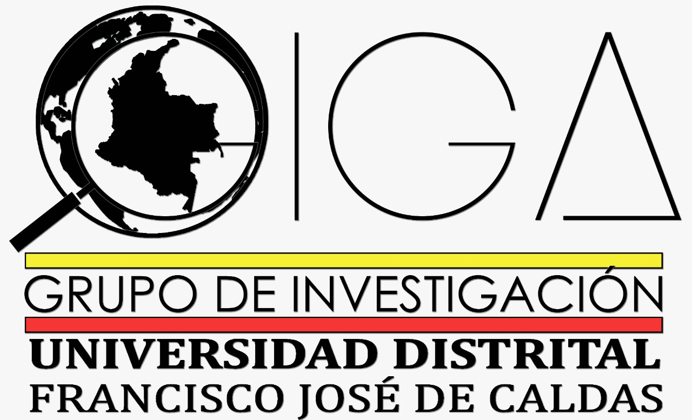
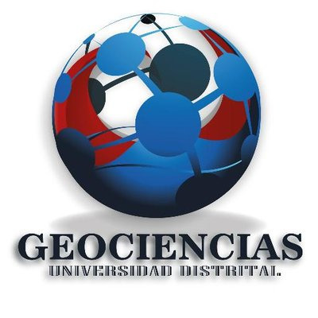
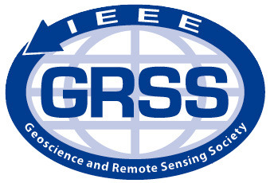

<section class="infoorganiza">
  <div class="container" >
    <div class="container-logo" data-aos="zoom-in-down" >

      <h1><strong>XXIV SEMANA ICG 2018</strong></h1>
      <h5>ÉTICA EN EL QUE HACER INGENIERIL DE LAS FUTURAS GENERACIONES</h5>
      <h6>Ingeniería Catastral y Geodesia (1967 - 2018)</h6>
    </div>
  </div>
</section>


<!--Los logos -->

<section class="detallesorganiza">
<h2 align="center"><strong>Organiza:</strong></h2>
<div class="logos">	
	
	
	
</div>


<h2 align="center"><strong>Apoya:</strong></h2>	
<div class="logos">

	
	
</div>

</section>